女 安圆圆
占事：振华重工600320从明天到下周五的走势
公历起卦时间：2015年1月6日14时34分 (电脑自动)
干支：甲午年 丁丑月 壬午日 丁未时 （日空：申酉）
离宫：离为火 (六冲)
六神 伏神 本 卦
白虎 兄弟己巳火 ▅▅▅▅▅ 世
腾蛇 子孙己未土 ▅▅ ▅▅
勾陈 妻财己酉金 ▅▅▅▅▅
朱雀 官鬼己亥水 ▅▅▅▅▅ 应
青龙 子孙己丑土 ▅▅ ▅▅
玄武 父母己卯木 ▅▅▅▅▅
卯日冲实酉金，涨3%。或是冲出月墓。
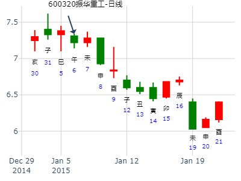
占事：测603220贝通信在2019.1.28-2019.2.1走势
公历起卦时间：2019年1月27日18时52分 (手工指定)
干支：戊戌年 乙丑月 甲子日 癸酉时 （日空：戌亥）
神煞：驿马－寅 桃花－酉 日禄－寅 贵人－丑，未
离宫：离为火 (六冲)
六神 伏神 本 卦
玄武 兄弟己巳火 ▅▅▅▅▅ 世
白虎 子孙己未土 ▅▅ ▅▅
腾蛇 妻财己酉金 ▅▅▅▅▅
勾陈 官鬼己亥水 ▅▅▅▅▅ 应
朱雀 子孙己丑土 ▅▅ ▅▅
青龙 父母己卯木 ▅▅▅▅▅
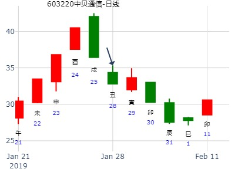
招财公主 占事：600428中远航运未来二周走势
公历起卦时间：2015年3月8日14时31分 (在线摇卦)
干支：乙未年 己卯月 癸未日 己未时 （日空：申酉）
离宫：离为火 (六冲)
六神 伏神 本 卦
白虎 兄弟己巳火 ▅▅▅▅▅ 世
腾蛇 子孙己未土 ▅▅ ▅▅
勾陈 妻财己酉金 ▅▅▅▅▅
朱雀 官鬼己亥水 ▅▅▅▅▅ 应
青龙 子孙己丑土 ▅▅ ▅▅
玄武 父母己卯木 ▅▅▅▅▅
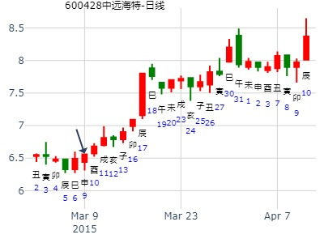
男 占事：2016年辰月上证指数走势
公历起卦时间：2016年4月5日2时50分 (在线摇卦)
干支：丙申年 壬辰月 丁巳日 辛丑时 （日空：子丑）
神煞：驿马－亥 桃花－午 日禄－午 贵人－酉，亥
离宫：离为火 (六冲)
六神 伏神 本 卦
青龙 兄弟己巳火 ▅▅▅▅▅ 世
玄武 子孙己未土 ▅▅ ▅▅
白虎 妻财己酉金 ▅▅▅▅▅
腾蛇 官鬼己亥水 ▅▅▅▅▅ 应
勾陈 子孙己丑土 ▅▅ ▅▅
朱雀 父母己卯木 ▅▅▅▅▅
1）辰月生合财酉金，财酉金长生于巳日，财很旺，可判断本辰月（公历4月5日至5月5日）为升。
2）只可惜兄弟持世对财不利，可喜巳日冲官鬼亥水暗动去克制了兄弟，可判断是官方于公历4月11号亥日收盘后出台消息支持股市，本月严重关注4月11号亥日 是个特别的日子 或许是机构挖坑 收盘后官方会出台消息来安慰股民。
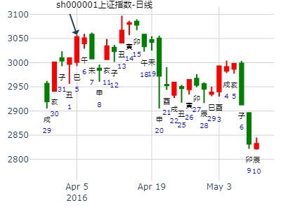
占事：002702海欣食品明天涨跌
公历起卦时间：2016年4月28日19时1分 (电脑自动)
干支：丙申年 壬辰月 庚辰日 丙戌时 （日空：申酉）
神煞：驿马－寅 桃花－酉 日禄－申 贵人－丑，未
离宫：离为火 (六冲)
六神 伏神 本 卦
腾蛇 兄弟己巳火 ▅▅▅▅▅ 世
勾陈 子孙己未土 ▅▅ ▅▅
朱雀 妻财己酉金 ▅▅▅▅▅
青龙 官鬼己亥水 ▅▅▅▅▅ 应
玄武 子孙己丑土 ▅▅ ▅▅
白虎 父母己卯木 ▅▅▅▅▅
《周易》——离为火 离上离下 离：利贞，
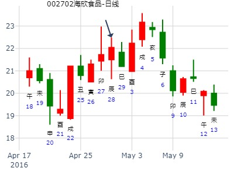
主帖标题: 399006 下周
公历起卦时间：2022年5月13日18时33分 (在线摇卦)
干支：壬寅年 乙巳月 丙寅日 丁酉时 （日空：戌亥）
神煞：驿马－申 桃花－卯 日禄－巳 贵人－酉，亥
离宫：离为火 (六冲)
六神 伏神 本 卦
青龙 兄弟己巳火 ▅▅▅▅▅ 世
玄武 子孙己未土 ▅▅ ▅▅
白虎 妻财己酉金 ▅▅▅▅▅
螣蛇 官鬼己亥水 ▅▅▅▅▅ 应
勾陈 子孙己丑土 ▅▅ ▅▅
朱雀 父母己卯木 ▅▅▅▅▅
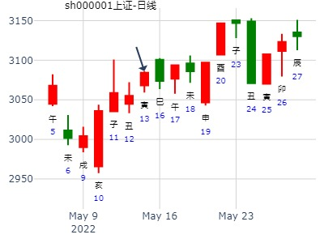
易学预测上证大盘6月30到7月4日的一周走势(原创)
公历时间：2008年 6月29日
干支： 戊子年 戊午月 庚子日 甲申时 (旬空：辰巳)
离宫：离为火(六冲)六神 伏 神 【本 卦】
螣蛇 兄弟己巳火 ━━━ 世
勾陈 子孙己未土 ━ ━
朱雀 妻财己酉金 ━━━
青龙 官鬼己亥水 ━━━ 应
玄武 子孙己丑土 ━ ━
白虎 父母己卯木 ━━━
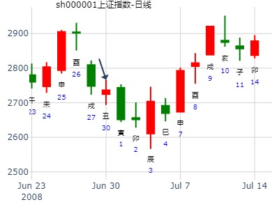
离为火卦测下周大盘。
公历：2009年6月19日11时8分 星期五 北京时间
干支：己丑年 庚午月 乙未日 壬午时
旬空：午未 戌亥 辰巳 申酉
午月 乙未日 （旬空：辰巳）
离：离为火(六冲)
六神 【本 卦】
玄武 ▅▅▅▅▅ 兄弟己巳火 世
白虎 ▅▅ ▅▅ 子孙己未土
螣蛇 ▅▅▅▅▅ 妻财己酉金
勾陈 ▅▅▅▅▅ 官鬼己亥水 应
朱雀 ▅▅ ▅▅ 子孙己丑土
青龙 ▅▅▅▅▅ 父母己卯木
世爻在午月旬空，居然还能涨。
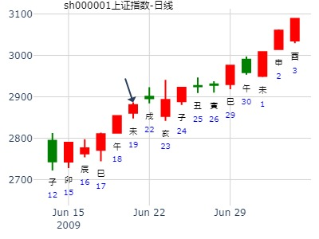
上证指数6月30日-7月4日行情预测？[六爻预测][原创]再人
起卦时间：2014年06月29日17时03分
起卦方式：手摇硬币起卦
干支：甲午年 庚午月 辛未日 丁酉时
旬空：辰巳 戌亥 戌亥 辰巳
六神 伏神 离宫：离为火（六冲）
【本 卦】
滕蛇 ▅▅▅▅▅ 兄弟己巳火 世
勾陈 ▅▅ ▅▅ 子孙己未土
朱雀 ▅▅▅▅▅ 妻财己酉金
青龙 ▅▅▅▅▅ 官鬼己亥水 应
玄武 ▅▅ ▅▅ 子孙己丑土
白虎 ▅▅▅▅▅ 父母己卯木
断：1、全周看涨（兄子旺相生财、子孙丑土暗动生财），可能
有火爆行情（卦遇六冲兼“离火”）。
其中：
30日周一壬申日涨；
1日周二癸酉日涨；
2日周三甲戌日涨；
3日周四乙亥日冲高回落，略跌；
4日周五丙子日跌。
最高点将在甲戌、乙亥日出现。
王：
兄弟持世非好事，兄弟无月破无旬空，但是未日冲了丑爻子孙暗动。
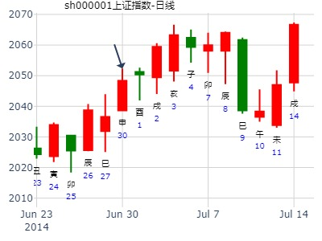
风生水起 占事：汉王科技未来三个月
起卦方式：手动摇卦
公历时间：2015年6月2日8时12分
干 支：乙未年 辛巳月 己酉日 戊辰时
旬 空：辰巳 申酉 寅卯 戌亥
离宫：离为火（六冲）
六神 【本 卦】
勾陈 ▄▄▄▄▄ 兄弟己巳火 世
朱雀 ▄▄ ▄▄ 子孙己未土
青龙 ▄▄▄▄▄ 妻财己酉金
玄武 ▄▄▄▄▄ 官鬼己亥水 应
白虎 ▄▄ ▄▄ 子孙己丑土
螣蛇 ▄▄▄▄▄ 父母己卯木
兄弟持世。 巳火在午月旺，兄弟旺就暴跌。
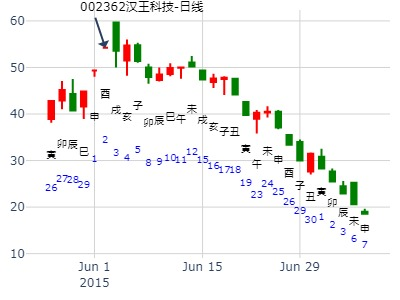
占事：下周沪市 6月23－26日
起卦方式：手工指定
公历时间：2015年6月21日18时28分
干 支：乙未年 壬午月 戊辰日 辛酉时
旬 空：辰巳 申酉 戌亥 子丑
神 煞：驿马─寅 桃花─酉 日禄─巳 贵人─丑，
离宫：离为火（六冲）
六神 【本 卦】
朱雀 ▄▄▄▄▄ 兄弟己巳火 世
青龙 ▄▄ ▄▄ 子孙己未土
玄武 ▄▄▄▄▄ 妻财己酉金
白虎 ▄▄▄▄▄ 官鬼己亥水 应
螣蛇 ▄▄ ▄▄ 子孙己丑土
勾陈 ▄▄▄▄▄ 父母己卯木
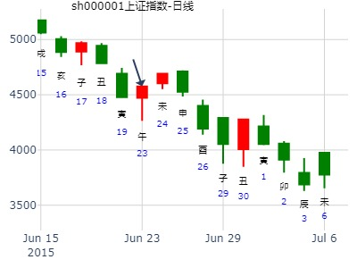
离静卦
占事：上证指数甲午月(6月6日-7月6日)行情预测 再人
时间: 2016-06-05
干支: 丙申年甲午月戊午日丁巳时 (旬空: 子丑 )
离静卦
六神 伏神 本 卦
朱雀 ▅▅▅▅▅ 兄弟巳火 世
青龙 ▅▅ ▅▅ 子孙未土
玄武 ▅▅▅▅▅ 妻财酉金
白虎 ▅▅▅▅▅ 官鬼亥水 应
腾蛇 ▅▅ ▅▅ 子孙丑土
勾陈 ▅▅▅▅▅ 父母卯木
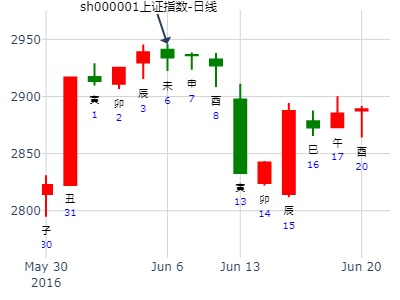
离静卦_沪深300下周_2024-06-16 风生水起
时间: 2024-06-16
干支: 甲辰年庚午月辛亥日 (旬空: 寅卯 )
离静卦
腾蛇 ▅▅▅▅▅ 兄弟巳火 世
勾陈 ▅▅ ▅▅ 子孙未土
朱雀 ▅▅▅▅▅ 妻财酉金
青龙 ▅▅▅▅▅ 官鬼亥水 应
玄武 ▅▅ ▅▅ 子孙丑土
白虎 ▅▅▅▅▅ 父母卯木
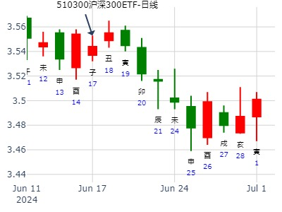
占事：002009当天走势
起卦方式：手工指定 易经股市论坛 www.yijingstock.com 在线排盘系统
公历时间：2013年7月4日8时53分
干 支：癸巳年 戊午月 辛未日 壬辰时
旬 空：午未 子丑 (戌亥) 午未
离宫：离为火（六冲）
六神 【本 卦】
螣蛇 ▄▄▄▄▄ 兄弟己巳火 世
勾陈 ▄▄ ▄▄ 子孙己未土
朱雀 ▄▄▄▄▄ 妻财己酉金
青龙 ▄▄▄▄▄ 官鬼己亥水 应
玄武 ▄▄ ▄▄ 子孙己丑土
白虎 ▄▄▄▄▄ 父母己卯木
试断：日冲子孙暗动，子孙未土逢日辰入爻，收阳
断错。低开后震荡向上尾盘下杀收跌0.19、1.98%的阴线
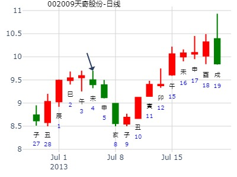
占事：600362江西铜业申月涨跌？
公历起卦时间：2015年8月17日12时10分 (在线摇卦王)
干支：乙未年 甲申月 乙丑日 壬午时 （日空：戌亥）
离宫：离为火 (六冲)
六神 伏神 本 卦
玄武 兄弟己巳火 ▅▅▅▅▅ 世
白虎 子孙己未土 ▅▅ ▅▅
腾蛇 妻财己酉金 ▅▅▅▅▅
勾陈 官鬼己亥水 ▅▅▅▅▅ 应
朱雀 子孙己丑土 ▅▅ ▅▅
青龙 父母己卯木 ▅▅▅▅▅
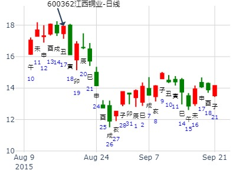
以下是引用金眼牛在2007-9-7 15:23:00的发言：
占事：大盘9月10-14日涨跌?
公历时间：2007年9月7日15时5分 星期五
干支：丁亥年 戊申月 甲辰日 壬申时 (旬空：寅卯)
神煞：驿马—寅 桃花—酉 日禄—寅 贵人—丑，未
离宫：离为火（六冲） 六神 【本 卦】
玄武 ▅▅▅▅▅ 兄弟己巳火 世
白虎 ▅▅ ▅▅ 子孙己未土
螣蛇 ▅▅▅▅▅ 妻财己酉金
勾陈 ▅▅▅▅▅ 官鬼己亥水 应
朱雀 ▅▅ ▅▅ 子孙己丑土
青龙 ▅▅▅▅▅ 父母己卯木
相信金眼牛的这个卦。下周好了。
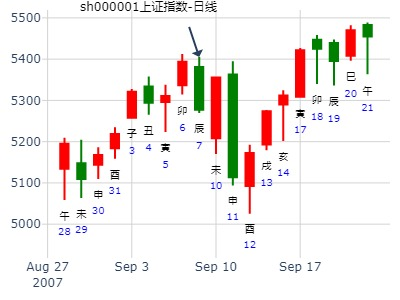
测002252上海莱士在2015年9月-12月走势
公历起卦时间：2015年9月5日8时56分 (手工指定)
干支：乙未年 甲申月 甲申日 戊辰时 （日空：午未）
神煞：驿马－寅 桃花－酉 日禄－寅 贵人－丑，未
离宫：离为火 (六冲)
六神 伏神 本 卦
玄武 兄弟己巳火 ▅▅▅▅▅ 世
白虎 子孙己未土 ▅▅ ▅▅
腾蛇 妻财己酉金 ▅▅▅▅▅
勾陈 官鬼己亥水 ▅▅▅▅▅ 应
朱雀 子孙己丑土 ▅▅ ▅▅
青龙 父母己卯木 ▅▅▅▅▅
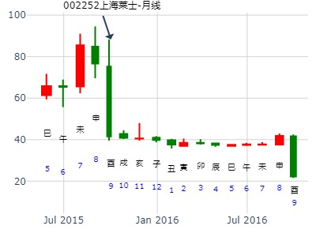
杭萧钢构600477下周涨跌
起卦方式：手动摇卦
公历时间：2019年11月28日20时34分
干 支：己亥年 乙亥月 己巳日 甲戌时
旬 空：辰巳 申酉 戌亥 申酉
神 煞：驿马─亥 桃花─午 日禄─午 贵人─子，申
离宫：离为火（六冲）
六神 【本 卦】
勾陈 ▄▄▄▄▄ 兄弟己巳火 世
朱雀 ▄▄ ▄▄ 子孙己未土
青龙 ▄▄▄▄▄ 妻财己酉金
玄武 ▄▄▄▄▄ 官鬼己亥水 应
白虎 ▄▄ ▄▄ 子孙己丑土
螣蛇 ▄▄▄▄▄ 父母己卯木
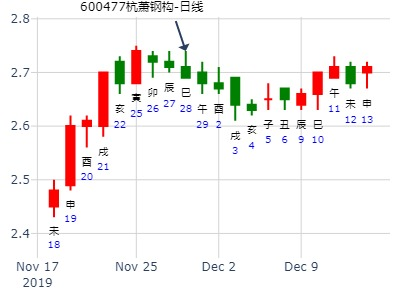
主帖标题: 000835今天涨跌
公历时间：2019年12月13日8时0分
干 支：己亥年 丙子月 甲申日 戊辰时
旬 空：辰巳 申酉 午未 戌亥
神 煞：驿马─寅 桃花─酉 日禄─寅 贵人─丑，未
离宫：离为火（六冲）
六神 【本 卦】
玄武 ▄▄▄▄▄ 兄弟己巳火 世
白虎 ▄▄ ▄▄ 子孙己未土
螣蛇 ▄▄▄▄▄ 妻财己酉金
勾陈 ▄▄▄▄▄ 官鬼己亥水 应
朱雀 ▄▄ ▄▄ 子孙己丑土
青龙 ▄▄▄▄▄ 父母己卯木
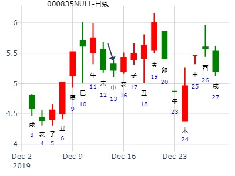